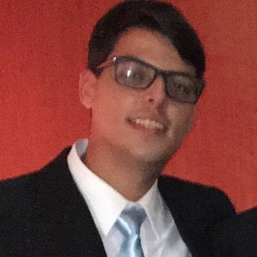

Celso Gomes De Oliveira Junior
Formação
Engenharia de telecomunicações -UNICAMP
Inicio : 03/14
Fim : 12/20
Atualmente estagiário da cervejaria Ambev (www.ambev.com.br) e cursando o penúltimo do curso Engenharia de Telecomunicações na Universidade Estadual de Campinas. Durante a graduação, fui monitor de laboratório de física e bolsista durante 3 anos no projeto montagem de experimentos didáticos para complementação do ensino de física, uma dessas montagens se tornou um artigo cientifico ("Light interefence pattern meansure from automated low-cost Young's double - slit experiment") que foi publicado pela Revista Brasileira de física e está em analise pela revista American Journal of Physics. Além disso na graduação realizei trabalhos comunitários em Limeira que visavam chamar atenção dos alunos do ensino fundamental e médio para a importância da sustentabilide
Experiências Estágiario Cervejaria Ambev Inicio : 07/2019 Até o momento Montagem de experimenos didáticos para complementação do ensino de física - UNICAMP Inicio : 03/2015 Fim : 12/2018 Artigo cientifico "Light interefence pattern meansure from automated low-cost Young's double - slit experiment" - REVISTA BRASILEIRA DE FÍSICA Monitoria laboratório de física - UNICAMP Inicio : 03/2019 Fim : 07/2018 Se interessou? Entre em contato!